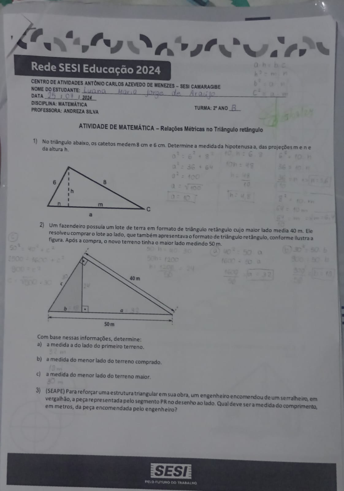

Ficha: relações trigonométricas
Ficha passada em classe pela professora Andresa. Realize e poste em seu portfólio.

Abrir imagem completa ↗Raciocínio, relações e resolução de problemas.
Ficha passada em classe pela professora Andresa. Realize e poste em seu portfólio.

Abrir imagem completa ↗Vídeo que o professor André pediu para fazer em grupo sobre determinado tema. Faça, edite e poste em seu portfólio. Recomendado fazer o upload no Google Drive.